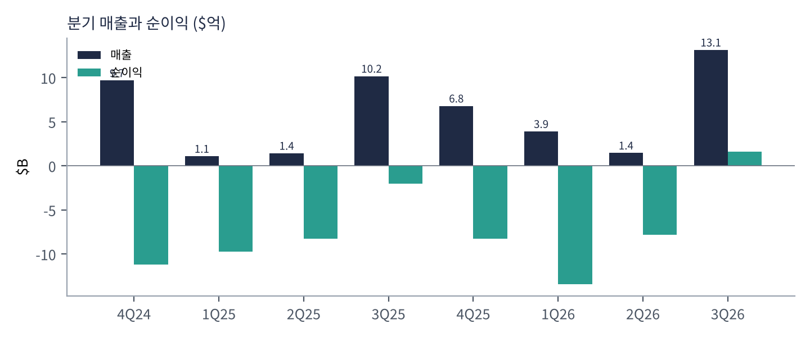
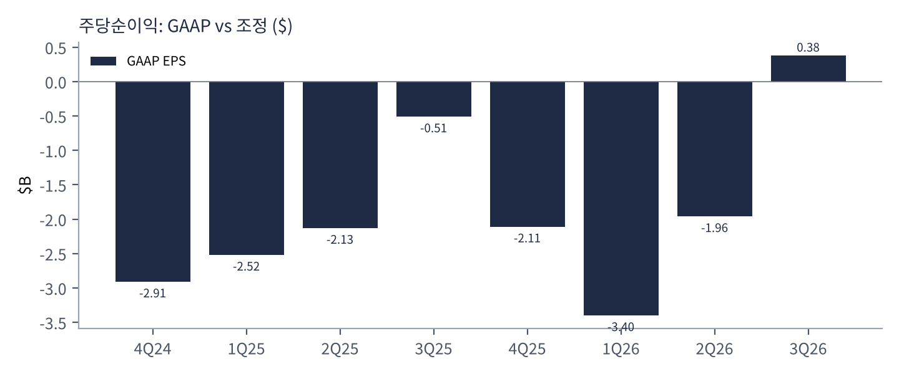
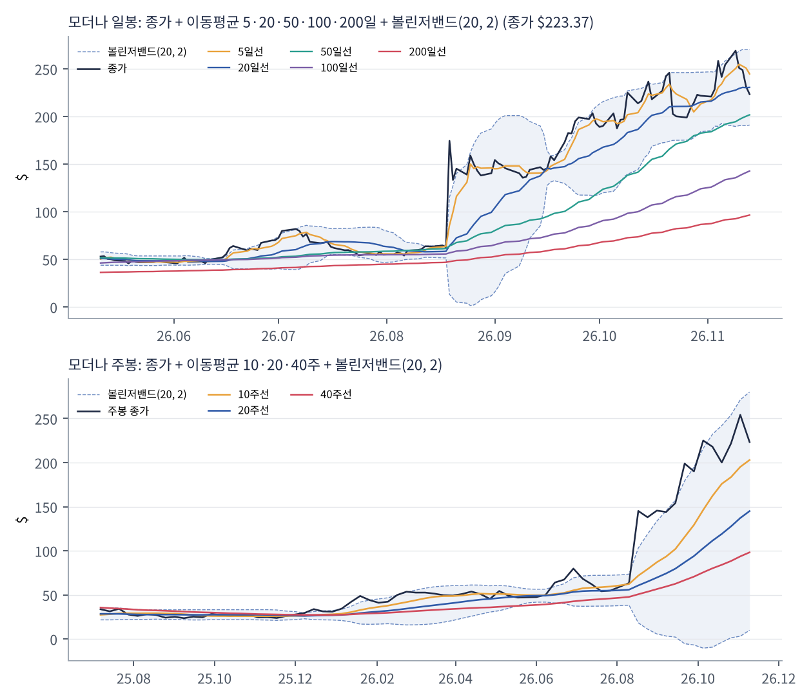
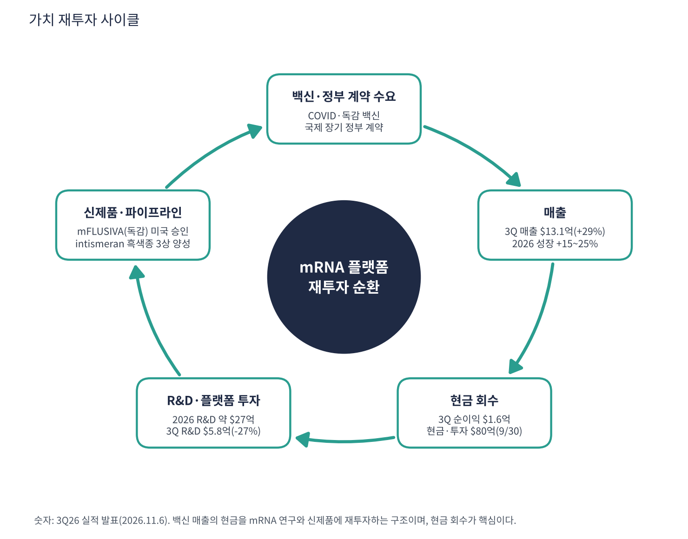

모더나는 mRNA 기술로 백신과 치료제를 만드는 바이오 회사다. 3Q에 처음 흑자를 내고 매출 가이던스를 올렸지만, 분기 매출 변동이 크고 미국 매출이 정체이며 현금 소진이 큰 회사다. 주가는 1년 전($26.71)의 약 8.4배(내 계산)다.
| 항목 | 내용 |
|---|---|
| 종목 | Moderna (MRNA) · NASDAQ · mRNA 백신·치료제 · 매사추세츠 케임브리지 |
| 멀티플 | PER 적자 · P/S 39.4배 (11/13 종가 $223.37) |
| 최근 분기(3Q26) | 매출 $13.1억(+29%), 순이익 $1.6억, GAAP EPS $0.38 |
| 가이던스(2026) | 매출 성장 15~25%(기존 최대 10%), 연말 현금·투자 $81~83억, R&D 약 $27억 |
| 현금·부채 | 회사: 현금·투자 $80억(9/30). 스캐너: 현금·단기투자 $51.7억, 총차입금 $42.3억 |
| 직책 | 인물 | 역할·특징 |
|---|---|---|
| CEO | 스테판 방셀(Stéphane Bancel) | 3Q 매출 +29%, mFLUSIVA 승인, intismeran 3상 양성을 성과로 제시 |
| CFO | 제이미 모크(Jamey Mock) | 매출 가이던스 상향과 R&D 지출 하향을 발표 |
| 사장 | 스티븐 호지(Stephen Hoge) | 노로바이러스 백신 추가 코호트를 이번 시즌 등록하지 않기로 설명 |
경영 스타일: '국제 정부 계약과 비용 절감으로 흑자와 현금 안정을 먼저 만든다'. 2026 R&D 전망을 $29억에서 $27억으로 낮추고 조정 현금비용 $38억을 제시했다. 3Q에는 노트 발행으로 순 $26억을 조달해 현금을 늘렸다.
COVID 백신과 호흡기 백신 포트폴리오로 승인 제품 5개를 확보했다(독감 백신 mFLUSIVA 미국 승인).
머크와 공동 개발한 intismeran은 흑색종 3상에서 재발·사망 위험을 KEYTRUDA 단독보다 42% 낮췄다(회사 발표).
다음 실적발표(4Q26)는 세 가지 질문에 답하는 자리다.
질문 1. 4Q 매출이 연간 가이던스(+15~25%)를 채우는가?
| 확인할 숫자 | 좋아지면 | 나빠지면 |
|---|---|---|
| 2026 매출 성장 15~25%(약 $22.4~24.3억, 내 계산), 9개월 매출 $18.5억 → 4Q는 약 $3.9~5.8억 필요(내 계산) | 가이던스 안이면 ②매출 고리가 유지된다 | 미달이면 국제 계약 매출 시점 위험이 확인된다 |
질문 2. 연말 현금이 $81~83억에 도달하고 매출채권이 회수되는가?
| 확인할 숫자 | 좋아지면 | 나빠지면 |
|---|---|---|
| 연말 현금·투자 가이던스 $81~83억(9/30 $80억), 3Q 순매출채권 $13.7억 | 도달하면 ③현금 고리가 확인된다 | 미달이면 소진이 가이던스보다 크다는 뜻이다 |
질문 3. 규제·임상 결과가 신제품 고리를 채우는가?
| 확인할 숫자 | 좋아지면 | 나빠지면 |
|---|---|---|
| 독감·코로나 결합백신 FDA 재신청 안내 대기, intismeran 규제 제출 시기, 노로바이러스 백신(mRNA-1403)은 중간분석에서 조기 성공 기준 미달 | FDA 경로가 명확해지면 ⑤신제품 고리가 열린다 | 지연되면 신제품 매출 시점이 밀린다 |
한 줄 판정 규칙: 첫 질문이 가이던스 안이고 현금이 목표에 닿으면 약한 고리(매출 시점 변동·현금 소진)가 완화되고, 매출채권 회수가 늦으면 현금 고리 부담이 커진다.
일정: 2027-02-25 예정(트레이딩뷰 일정, 회사 확정 확인 필요). 11/12 애널리스트 데이 내용은 이 보고서에서 확인하지 못했다.
| 분기 | 매출 | 순이익 | EPS | 조정 EPS | 특이 사항 |
|---|---|---|---|---|---|
| 4Q24 | $9.7억 | $-11.2억 | -2.91 | – | |
| 1Q25 | $1.1억 | $-9.7억 | -2.52 | – | |
| 2Q25 | $1.4억 | $-8.2억 | -2.13 | – | |
| 3Q25 | $10.2억 | $-2.0억 | -0.51 | – | |
| 4Q25 | $6.8억 | $-8.3억 | -2.11 | – | |
| 1Q26 | $3.9억 | $-13.4억 | -3.40 | – | |
| 2Q26 | $1.4억 | $-7.8억 | -1.96 | – | |
| 3Q26 | $13.1억 | $1.6억 | 0.38 | – | 3Q26 첫 흑자(순이익 $1.6억), 매출 +29% |


값은 트레이딩뷰 스캐너 분기 이력이다. 조정 EPS는 트레이딩뷰 Reported가 GAAP EPS와 같아 따로 발표하지 않는 것으로 보고 '–'로 뒀다. 분기 매출은 계절성이 크다(2Q26 $1.4억, 3Q26 $13.1억). 분기 설비투자는 구하지 못했다.
흐름 요약: 매출은 4Q24 $9.7억에서 3Q26 $13.1억으로 늘었고, 3Q26에 처음으로 순이익 $1.6억을 냈다. 그 전 7개 분기는 모두 순손실이었다.
| 항목 | 값 | 비고 |
|---|---|---|
| 3Q 매출 | $13.1억 | 전년 $10.2억(+29%) |
| 3Q 미국 매출 | $7.8억 | 전년과 같은 수준(정체) |
| 3Q 해외 매출 | $5.3억 | 국제 장기 정부 계약 이행, 전년 약 $2.4억(내 계산) |
| 2026 매출 가이던스 | +15~25% | 기존 최대 +10%, 미국·해외 비슷하게 기여 전망 |
성장은 해외에서 나오고 미국은 정체다. 제품별 매출(COVID·RSV·독감)과 고객별 표는 이번에 구하지 못했다.
모더나는 'mRNA 플랫폼을 백신에서 암까지 넓히며 현금 자립을 이루는 것'을 목표로 한다. 2028년 현금 손익분기 목표는 이번 발표에서 언급을 확인하지 못했다(확인 필요).
| 축 | 최근 움직임 |
|---|---|
| 제품 | 승인 제품 5개(mFLUSIVA 포함), 결합백신 FDA 재신청 안내 대기 |
| 암 | intismeran 흑색종 3상 양성, 규제 제출 시기 대기 |
| 재무 | 2026 R&D 약 $27억, 연말 현금 $81~83억 |

| 이동평균 | 값 | 종가 대비 | 해석 |
|---|---|---|---|
| 5일선 | $244.65 | -8.7% | 현재가가 아래 |
| 20일선 | $230.48 | -3.1% | 현재가가 아래 |
| 50일선 | $201.67 | +10.8% | 현재가가 위 |
| 100일선 | $142.72 | +56.5% | 현재가가 위 |
| 200일선 | $96.41 | +131.7% | 현재가가 위 (+132%) |
주봉 흐름: 52주 고점 $280.80(11/9), 52주 저점 $22.28(11/21). 현재가 $223.37는 200일선 $96.41보다 위, 50일선 $201.67보다 위에 있다.
| 규칙 | 기준 | 현재 값 | 신호 |
|---|---|---|---|
| 장기 추세 필터 | 종가 vs 200일선 | $223.37 > $96.41 | 매수 |
| 중장기 교차 | 50일선 vs 200일선 | $201.67 > $96.41 | 매수 |
| 단기 교차 | 20일선 vs 50일선 | $230.48 > $201.67 | 매수 |
| 돈키언 채널 | 55일 고가 $280.80 / 저가 $130.38 | 중간값 $205.59 위 | 매수 |
| 1개월 모멘텀 | 21거래일 수익률 | -5.6% (기준 $236.50) | 매도 |
| 3개월 모멘텀 | 63거래일 수익률 | +246.5% (기준 $64.46) | 매수 |
| 6개월 모멘텀 | 126거래일 수익률 | +355.5% (기준 $49.04) | 매수 |
| 12개월 모멘텀 | 252거래일 수익률 | +736.3% (기준 $26.71) | 매수 |
| 종합 (8개 평균) | +0.75 | 강한 매수 |
해석: 8개 신호 중 매수 7개, 매도 1개(점수 +0.75, 강한 매수)다. 14일 ATR $19.16 (8.6%).
| 가격·조건 | 무엇이 바뀌나 | 의미 |
|---|---|---|
| $236.50 돌파 | 1개월 기준가 | 매도 → 매수 |
| $96.41 돌파 | 200일선 | 이탈하면 매수 → 매도 |
| 50일선이 200일선 위로 | 50/200 교차 | 이탈하면 매수 → 매도 |
| 20일선이 50일선 위로 | 20/50 교차 | 이탈하면 매수 → 매도 |
| 구분 | 가격대 | 근거 |
|---|---|---|
| 저항 1 | $230.48 | 20일선 |
| 저항 2 | $244.65 | 5일선 |
| 지지 1 | $201.67 | 50일선 |
| 지지 2 | $142.72 | 100일선 |
점수는 +0.75(강한 매수)다. 14일 ATR은 $19.16로 현재가의 8.6%다. 가까운 저항 $230.48을 종가로 넘는지와 가까운 지지 $201.67를 지키는지가 신호 전환의 기준이다. (내 가정, 매매 권유 아님)
| 악재 요인 | 내용 | 강도 |
|---|---|---|
| 현금 소진 | TTM 잉여현금 -$19.7억, 3Q -$16.1억(합의금 $9.5억 포함) | 높음 |
| 매출 변동 | 분기 매출 $1.4억~$13.1억, 해외 정부 계약 시점에 따라 변동 | 중간 |
| 미국 정체 | 3Q 미국 매출 전년 수준 | 중간 |
| 규제·임상 | 결합백신 FDA 재신청 안내 대기, 노로바이러스 백신 중간분석 조기 성공 기준 미달 | 중간 |
| 주가 급등 | 1년 전 $26.71 → $223.37(약 8.4배, 내 계산) | 높음 |
| 티커 | 회사 | PER(TTM) | PEG | P/S | EPS 성장(YoY) |
|---|---|---|---|---|---|
| MRNA | 모더나 | 적자 | – | 39.40배 | – |
| BNTX | 바이오엔텍 | 적자 | – | 7.68배 | -161% |
| NVAX | 노바백스 | 적자 | – | 3.51배 | -126% |
| PFE | 화이자 | 41.3배 | – | 2.61배 | -59% |
| MRK | 머크 | 150.9배 | – | 5.42배 | -87% |
MRNA 첫 행은 스캐너 값이다. 적자라 PER·PEG는 산출되지 않는다(EPS 성장률은 적자 폭 축소라 의미가 없어 '–'). BNTX·NVAX도 적자다.
모더나는 회사 기준 현금·투자 $80억(9/30)이지만 TTM 잉여현금이 -$19.7억이고 총차입금이 $42.3억(스캐너)이다. 3Q 잉여현금은 -$16.1억으로, 합의금 $9.5억 지급과 매출채권 미회수가 겹쳤다.
| 지표 | 값 | 계산·출처 | 해석 |
|---|---|---|---|
| 현금·투자(회사) | $80.0억 | 회사 발표(9/30) | 노트 발행 순조달 $26억 포함 |
| 현금·단기투자(스캐너) | $51.7억 | 스캐너 | 장기 투자 제외로 보임(확인 필요) |
| 총차입금 | $42.3억 | 스캐너 | 회사 현금 기준 순현금 약 $37.7억(내 계산) |
| TTM 잉여현금흐름 | -$19.7억 | 스캐너 | TTM 매출 $25.2억 대비 -78%(내 계산) |
| 기준 | 값 | 비고 |
|---|---|---|
| P/S (TTM) | 39.4배 | 스캐너 |
| 동종 | BNTX 7.7, NVAX 3.5, PFE 2.6, MRK 5.4 | 11/13 스캐너 |
해석: P/S 39배는 동종(2.6~7.7배)보다 크게 높다. 주가가 1년 전의 약 8.4배로 오른 뒤라 매출 대비 가격이 커졌다. 런웨이 점검: 2026 조정 현금비용 $38억에서 매출 약 $22.4~24.3억을 빼면 연 순소진은 약 $13.7~15.6억이고(내 계산), 현금 $80억은 약 5~6년분이다(내 가정, 합의금·부채 상환·투자 변동 제외).
| 지표 | 값 | 판정 |
|---|---|---|
| PER | 산출 불가 | TTM EPS -$7.09(스캐너) |
| TTM EBITDA | -$26.7억 | 스캐너, 매출 대비 약 -106%(내 계산) |
| TTM 영업이익률 | -116.0% | 스캐너 |
| 3Q 순이익률 | 약 12.3% | 순이익 $1.62억 ÷ 매출 $13.13억(내 계산) |
| 방식 | PER | EPS 성장률 | PEG | 판정 |
|---|---|---|---|---|
| 트레이딩뷰 (GAAP TTM) | 적자 | – | – | 산출 불가(적자) |
판정: TTM 순손실이라 PER·PEG를 산출할 수 없다. PEG 투자 적격(≤1.0) 판정 대상이 아니다.3Q 흑자는 해외 계약 매출이 몰린 분기 효과로 보인다(내 해석). TTM이 흑자로 돌아서는 시점은 이번에 구하지 못했다(확인 필요).

모더나의 사이클은 백신·정부 계약 수요 → 매출 → 현금 회수 → R&D·플랫폼 투자 → 신제품·파이프라인이다. 번 현금으로 mRNA 연구에 재투자해 다음 제품을 만든다.
| 고리 | 현재 숫자 | 고리 강도 | 약해지는 신호 |
|---|---|---|---|
| ① 백신·정부 계약 | 해외 매출 $5.3억, 미국 $7.8억(정체) | 보통 | 미국 정체 |
| ② 매출 | 3Q +29%, 2026 +15~25% 가이던스 | 보통 | 분기 변동 큼(2Q $1.4억) |
| ③ 현금 회수 | 3Q 순이익 $1.6억, 현금·투자 $80억 | 약함 | 3Q 잉여현금 -$16.1억, 회수 지연 |
| ④ R&D·플랫폼 투자 | R&D 약 $27억, 3Q -27% | 보통 | 비용 절감으로 파이프라인 속도 변동 |
| ⑤ 신제품·파이프라인 | mFLUSIVA 승인, intismeran 3상 양성 | 보통 | 결합백신·노로바이러스 지연 |
구조: 가장 약한 곳은 ③이다. 3Q 흑자에도 잉여현금이 -$16.1억이었고, 연말까지 매출채권 회수와 현금 $81~83억 달성이 확인돼야 사이클이 닫힌다(내 해석).